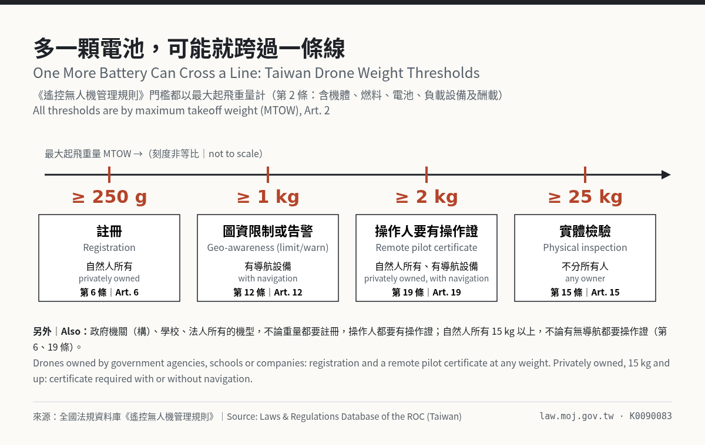
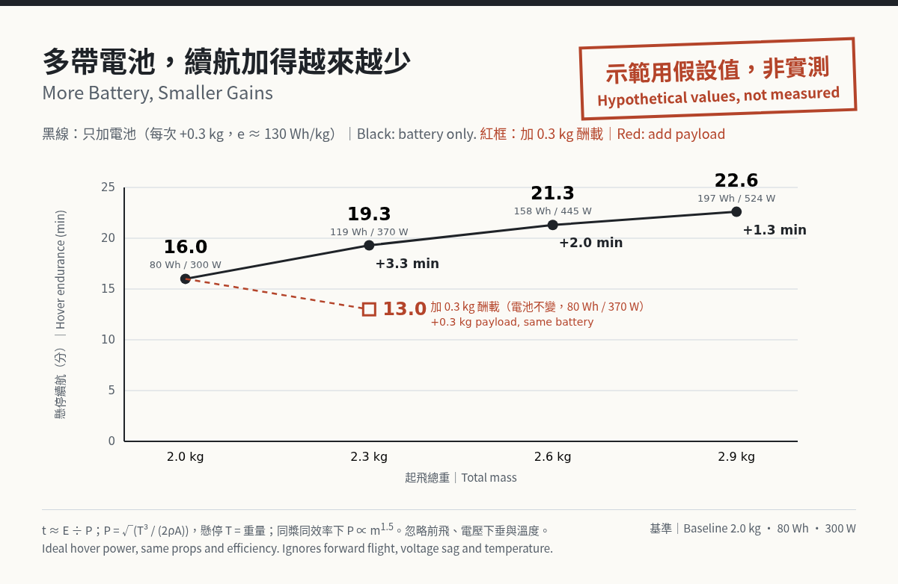
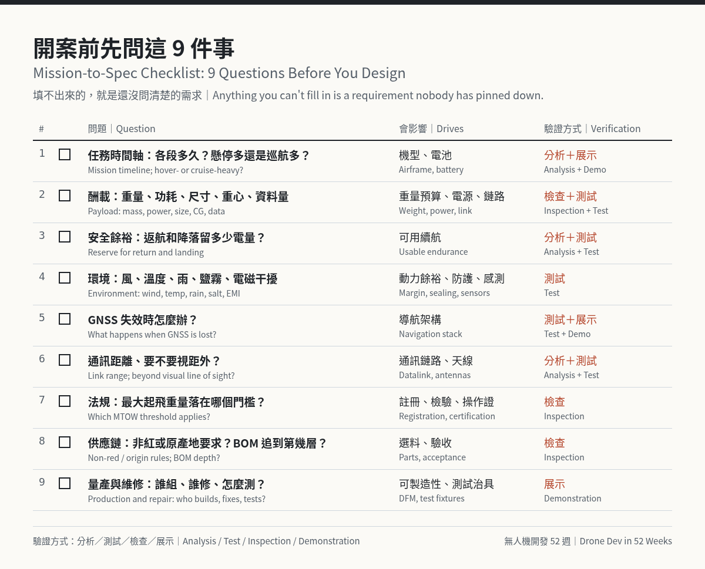

無人機設計：為什麼要懂整台無人機，從需求到規格
摘要： 無人機設計的第一步是把任務寫清楚：要飛多久、載什麼、在哪裡飛、受哪些法規管、供應鏈有什麼限制。這篇用任務剖面、重量預算和一個標明假設值的續航算例，說明為什麼每個零件都挑最好的，整台機不一定最好；接著附需求到規格檢查清單，後半整理本週無人機新聞與下週看點。
Summary: Drone system design starts by writing down the mission: how long, carrying what, where, under which rules, and with what supply-chain limits. Using a mission profile, a weight budget and a clearly hypothetical endurance example, this post shows why the best parts don't automatically add up to the best aircraft. A mission-to-spec checklist follows, and the second half covers this week's drone news and what to watch next week.
開場：供應鏈限制也是規格｜Opening: Supply-Chain Limits Are Part of the Spec
本週最受關注的台灣無人機新聞，是軍方驗收時在無人機晶片上看到「CN」字樣（案情整理在下方「本週大新聞」）。案子交給司法，這裡只借它提一個設計觀念：「不得使用中國與港澳料件」和「飛 30 分鐘」「載 1 公斤」一樣，都是寫進規格的需求，而且會一路影響 MCU、馬達、圖傳模組的選擇，以及 BOM 要追溯到第幾層。
This week's most-watched drone story in Taiwan started with chips marked "CN" found during a military acceptance check (details in This Week's Big Drone News below). The case belongs to the courts. The design lesson is simpler: "no parts from China, Hong Kong or Macau" is a requirement, just like "fly 30 minutes" or "carry 1 kg". It shapes which MCU, motors and video link you can pick, and how deep your BOM traceability has to go.
1. 從任務出發：任務剖面｜Start from the Mission: the Mission Profile
無人機設計的起點，建議先把五件事寫下來：要飛多久、載什麼、在什麼環境飛、受什麼法規管、供應鏈有什麼要求。這五件事就是任務剖面（mission profile）的骨架。
續航是一段時間軸：起飛、爬升、去程、在目標區懸停或繞飛、回程、降落，最後還要留安全餘裕。懸停多的任務和巡航多的任務，適合的機型可能完全不同，多旋翼和定翼的取捨通常在這裡就決定了一半。
酬載要問重量，也要問功耗、尺寸、重心位置和資料量。一顆相機如果還要接邊緣運算板做即時辨識，多出來的就包括運算板、散熱、供電，以及它吃掉的電池能量。
環境包括風、溫度、雨、海上鹽霧，還有電磁環境：會不會有 GNSS 干擾？GNSS 失效時要不要能繼續飛？這一條會直接決定感測器和導航架構。同一套思考也適用水面載具：Saildrone 本週（10/26）宣布，瑞典選它在波羅的海部署 4 艘 Voyager 無人水面艇，各跑 360 天（Saildrone 新聞稿），推進、通訊、導航條件和空中很不一樣，從任務推回規格的步驟卻相同。
法規常被放到最後，比較好的做法是放最前面，因為它常常是硬限制。以台灣的《遙控無人機管理規則》為例（全國法規資料庫），門檻都以「最大起飛重量」（MTOW, maximum takeoff weight；第 2 條定義為含機體、燃料、電池、負載設備及酬載的設計重量）計算：
- 註冊（第 6 條）： 自然人所有、250 公克以上要註冊；政府機關（構）、學校或法人所有的，不論重量都要註冊。
- 圖資限制或告警（第 12 條）： 1 公斤以上且裝導航設備的機型，要有能主動限制或告警的圖資軟體，避免飛進禁航區、限航區和機場周邊。
- 販售前登錄（第 17 條）： 製造者或進口者公開販售前，要在民航局系統登錄；2 公斤以上要登錄型式檢驗合格證或認可證明，未達 2 公斤登錄商品檢驗證明。未裝導航設備的機型，可免登錄型式檢驗或認可、資安檢測等項目。
- 實體檢驗（第 15 條）： 25 公斤以上要申請實體檢驗。
- 操作證（第 19 條）： 政府機關（構）、學校或法人所有的機型，不論重量，操作人都要有操作證；自然人所有的，2 公斤以上未達 15 公斤且裝導航設備、或 15 公斤以上，操作人要有操作證。
因為都用最大起飛重量算，多加一顆電池或一個酬載，就可能跨過一條線。最後一項是供應鏈：有沒有非紅或原產地要求，要在任務剖面裡就寫明。
A good first step in drone system design is writing down five things: how long it has to fly, what it carries, where it flies, which rules apply, and what the supply chain must look like. Those five are the skeleton of a mission profile.
Endurance is a timeline, not a single number: takeoff, climb, transit, loiter or hover over the target, return, landing, plus a reserve. A hover-heavy mission and a cruise-heavy mission can point to very different airframes, and half of the multirotor-versus-fixed-wing decision gets made right here.
Payload means weight, but also power draw, size, center of gravity and data rate. If a camera needs an edge computer for real-time detection, you're adding the computer, its cooling, its power supply and the battery energy it eats.
Environment covers wind, temperature, rain, salt spray and the RF environment. Will there be GNSS jamming? Does the aircraft need to keep operating GNSS-denied? That one question shapes the sensor and navigation stack. The same habit applies on the water: Saildrone announced on October 26 that Sweden picked it to run four Voyager uncrewed surface vessels in the Baltic, 360 days each (Saildrone press release). Propulsion, comms and navigation look very different at sea, but you still work backward from the mission to the spec.
Regulations often get left to the end. It's safer to put them first, because they are hard limits. Under 遙控無人機管理規則 (Taiwan's drone regulations) (Laws & Regulations Database), every threshold uses maximum takeoff weight (MTOW), which Article 2 defines as the design weight including airframe, fuel, battery, equipment and payload:
- Registration (Art. 6): privately owned drones of 250 g or more; drones owned by government agencies, schools or companies at any weight.
- Geo-awareness (Art. 12): 1 kg or more with navigation equipment requires map software that actively limits or warns, to keep the aircraft out of restricted areas and airport surroundings.
- Pre-sale registration (Art. 17): before public sale, the manufacturer or importer must register the model in the CAA system. At 2 kg or more that means a type certificate or approval; below 2 kg, a product inspection certificate. Models without navigation equipment can skip the type certificate or approval and cybersecurity testing items.
- Physical inspection (Art. 15): 25 kg or more.
- Remote pilot certificate (Art. 19): required for any drone owned by a government agency, school or company, regardless of weight; for privately owned drones, from 2 kg up to under 15 kg with navigation equipment, and from 15 kg up.
Because everything is measured by MTOW, one extra battery or payload can push you over a line. The last item is supply chain: whether a trusted, non-PRC supply chain (Taiwan's "non-red" policy) or other origin rules apply should be written into the mission profile from the start.

2. 重量預算：續航和酬載在搶同一塊餅｜The Weight Budget: Endurance and Payload Share One Pie
整台機的重量大致可以拆成：機架、動力（馬達、槳、電調）、電池、航電（飛控、GNSS、接收機、圖傳）、酬載。最大起飛重量固定的話，這幾塊就是在搶同一塊餅：電池多一點，酬載就少一點；酬載多一點，續航就短一點。而且這個關係不是線性的。以下所有數字都是示範用假設值，不是任何真實機型的數據。
續航粗估：t ≈ 電池可用能量 E ÷ 平均電功率 P。
懸停功率可以用動量理論（actuator disk）估：理想懸停功率 P = √(T³ / (2ρA))，T 是推力、ρ 是空氣密度、A 是槳盤面積（Momentum theory）。懸停時 T 等於重量。這個公式算的是理想誘導功率；電池實際要供應的電功率更大，中間差了旋翼的 figure of merit（實際旋翼和理想槳盤的效率比），再加上馬達和電調的效率損失。在同一組槳、效率不變的前提下，功率大約跟重量的 1.5 次方成正比（P ∝ m^1.5）；實際上加重後馬達和電調的工作點會移動、電池壓降也更明顯，懲罰通常比 1.5 次方更大。
同一個公式也顯示 P ∝ 1/√A：推力不變時，槳盤面積加倍，理想功率降為約 1/√2 ≈ 71%。降低槳盤負載（disk loading）常常比加電池有效，但更大的槳會牽動機架尺寸、重量和振動，第 3 節會再談。
示範用假設值：起飛重量 2.0 kg、懸停平均電功率 300 W、電池可用能量 80 Wh；電池的可用比能量假設 e ≈ 130 Wh/kg，加電池時多出的能量用 ΔE = e·Δm 算。
基準： 80 Wh ÷ 300 W ≈ 0.267 h ≈ 16.0 分鐘。
加 0.3 kg 酬載（總重 2.3 kg）： P ≈ 300 × (2.3/2.0)^1.5 ≈ 370 W，t ≈ 80 Wh ÷ 370 W ≈ 13.0 分鐘。重量多 15%，續航少了將近兩成。
只加電池的序列：
| 加的電池 | 總重 | 可用能量 E | 懸停功率 P | 續航 t | 比上一列多 |
|---|---|---|---|---|---|
| 0 | 2.0 kg | 80 Wh | 300 W | 16.0 分 | – |
| +0.3 kg | 2.3 kg | 119 Wh | 370 W | 19.3 分 | +3.3 分 |
| +0.6 kg | 2.6 kg | 158 Wh | 445 W | 21.3 分 | +2.0 分 |
| +0.9 kg | 2.9 kg | 197 Wh | 524 W | 22.6 分 | +1.3 分 |
每多 0.3 kg 電池，換到的續航一次比一次少：電池本身也是重量，重量又推高功率，這就是報酬遞減。法規方面，這組從 2.0 kg 起就已經在 2 公斤級，所以沒有跨線；但如果基準是 1.8 kg，多 0.3 kg 就跨過 2 公斤：自然人所有且有導航的機型，操作人要有操作證；要公開販售的話，登錄項目也從商品檢驗證明變成型式檢驗合格證。
還有兩個要打折的地方。第一，電池標籤上的數字不能全用。PX4 的 BAT1_CAPACITY 是以 mAh 設定的容量，用在電流積分估算剩餘電量，文件建議設成標示容量的約 90%，設太高會讓估算不準或剩餘電量突然下掉（PX4 Battery Estimation Tuning）。同樣道理，算續航時的 E 也要打折，再扣掉返航和降落的餘裕。第二，算出來的 P 只是起點。有了原型之後，應該用推力台，或懸停實測電流（例如 PX4 ULog 裡的電池紀錄）回頭校正模型。這個算例也刻意忽略了前飛功率、電壓下垂和溫度，這個算例要說明的是：重量是所有子系統共用的預算。
A drone's weight roughly splits into frame, propulsion (motors, props, ESCs), battery, avionics (flight controller, GNSS, receiver, video link) and payload. With MTOW fixed, they all compete for the same pie: more battery means less payload, and more payload means less flight time. The relationship isn't linear. Every number below is a hypothetical value for illustration, not data from any real aircraft.
Rough endurance: t ≈ usable battery energy E ÷ average electrical power P.
For hover, momentum (actuator disk) theory gives ideal power P = √(T³ / (2ρA)), where T is thrust, ρ is air density and A is rotor disk area (Momentum theory). In hover, thrust equals weight. That formula gives ideal induced power. The electrical power the battery has to deliver is higher, because of the rotor's figure of merit (real rotor efficiency relative to the ideal disk) and motor and ESC losses. With the same props and constant efficiency, power scales roughly with weight to the 1.5 power (P ∝ m^1.5). In practice the penalty is usually larger, since extra weight moves the motors and ESCs to a different operating point and battery sag gets worse.
The same formula shows P ∝ 1/√A: at constant thrust, doubling disk area cuts ideal power to about 1/√2 ≈ 71%. Lowering disk loading often beats adding battery, but bigger props change frame size, weight and vibration, which section 3 picks up.
Hypothetical inputs: 2.0 kg takeoff weight, 300 W average electrical hover power, 80 Wh usable energy. Usable battery specific energy is assumed at e ≈ 130 Wh/kg, so added energy is ΔE = e·Δm.
Baseline: 80 Wh ÷ 300 W ≈ 0.267 h ≈ 16.0 min.
Add a 0.3 kg payload (2.3 kg total): P ≈ 300 × (2.3/2.0)^1.5 ≈ 370 W, so t ≈ 80 Wh ÷ 370 W ≈ 13.0 min. Fifteen percent more weight costs almost a fifth of the flight time.
Battery-only series:
| Battery added | Total mass | Usable E | Hover P | Endurance t | Gain vs. previous row |
|---|---|---|---|---|---|
| 0 | 2.0 kg | 80 Wh | 300 W | 16.0 min | – |
| +0.3 kg | 2.3 kg | 119 Wh | 370 W | 19.3 min | +3.3 min |
| +0.6 kg | 2.6 kg | 158 Wh | 445 W | 21.3 min | +2.0 min |
| +0.9 kg | 2.9 kg | 197 Wh | 524 W | 22.6 min | +1.3 min |
Each extra 0.3 kg of battery buys less time than the last. The battery is weight too, and weight drives power up: diminishing returns. On regulations, this series starts at 2.0 kg, already in the 2 kg class, so it crosses no line. Start from 1.8 kg instead and the first 0.3 kg takes you past 2 kg: for a privately owned drone with navigation equipment, the operator now needs a remote pilot certificate, and for public sale the registration item changes from a product inspection certificate to a type certificate.
Two more discounts. First, the label number isn't all usable. PX4's BAT1_CAPACITY is a capacity in mAh used for current integration, and the docs suggest setting it to about 90% of the advertised capacity, warning that a higher value can cause poor estimates or sudden drops (PX4 Battery Estimation Tuning). By the same logic, E in the endurance math needs a discount, plus a reserve for return and landing. Second, the computed P is only a starting point. Once a prototype exists, calibrate the model against a thrust stand or measured hover current (for example the battery data in a PX4 ULog). This example also ignores forward-flight power, voltage sag and temperature on purpose. The point: weight is a budget every subsystem draws from.

3. 子系統怎麼互相牽動｜How Subsystems Pull on Each Other
無人機設計常見的情況是：每個人把自己負責的那塊做到最好，合起來卻飛不好。舉一條常見的連鎖：動力組為了效率選低 KV 馬達配大槳；槳變大，機臂就得加長；機臂加長，剛性和振動特性改變，飛控的 IMU 開始吃到雜訊；為了濾雜訊把濾波截止頻率調低，相位延遲變大，只好降低控制增益，抗風能力就變差。每一步單獨看都合理。
整台機大致可以拆成五個子系統：
- 動力：機架、槳、馬達、電調、電池。決定能載多重、飛多久。
- 飛控：MCU、IMU、姿態估測、控制迴圈。決定飛得穩不穩，對振動和電磁干擾很敏感。
- 感測：GNSS、氣壓計、光流、相機、熱像。GNSS 失效時還能不能導航，看這一層。
- 通訊：遙控、數傳、圖傳、抗干擾。天線位置又會和機架、電源雜訊互相影響。
- 邊緣運算：伴隨電腦、機上 AI 推論。算力越強，功耗、重量、散熱越多，又回到第 2 節的重量預算。
本週 GUAVA 開幕時，蕭副總統點名的飛控、邊緣運算、GPS 失效時的導航，就橫跨這五塊裡的三塊。下週會把這五個子系統畫成一張架構圖，看資料和電力怎麼在它們之間流動。
A common pattern in drone system design: everyone optimizes their own piece, and the assembled aircraft flies badly. One typical chain: for efficiency, propulsion picks a low-KV motor with a bigger prop. The bigger prop needs longer arms. Longer arms change stiffness and vibration, so the flight controller's IMU picks up noise. Lowering the filter cutoff to suppress that noise adds phase lag, so the control gains have to come down, and wind rejection gets worse. Each step made sense on its own.
The aircraft breaks down into five subsystems:
- Propulsion: frame, props, motors, ESCs, batteries. Sets how much you can lift and for how long.
- Flight control: MCU, IMU, attitude estimation, control loops. Sets how stable it flies, and is sensitive to vibration and EMI.
- Sensing: GNSS, barometer, optical flow, cameras, thermal. Whether you can still navigate GNSS-denied lives here.
- Communications: RC, telemetry, video, anti-jam. Antenna placement interacts with the frame and power noise.
- Edge computing: companion computers, on-board AI inference. More compute means more power, weight and heat, which lands you back in the section 2 weight budget.
At this week's GUAVA launch, Vice President Hsiao named flight control, edge computing and navigation when GPS fails, which covers three of these five. Next week's post draws them as one architecture map and traces how data and power move between them.
需求到規格檢查清單｜Mission-to-Spec Checklist
建議開案時逐條填，填不出來的就是還沒問清楚的需求；第 4 欄寫這條需求最後要怎麼驗證。
Fill this in at kickoff. Anything you can't fill in is a requirement nobody has pinned down yet. The last column says how each one will be verified.
| # | 問題｜Question | 會影響｜Drives | 驗證方式｜Verification method（分析/測試/檢查/展示｜Analysis/Test/Inspection/Demonstration） |
|---|---|---|---|
| 1 | 任務時間軸：起飛到降落各段多久？懸停多還是巡航多？｜Mission timeline: how long is each phase? Hover-heavy or cruise-heavy? | 機型、電池｜airframe type, battery | 分析＋展示（續航估算、實飛）｜Analysis + Demonstration |
| 2 | 酬載：重量、功耗、尺寸、重心、資料量？｜Payload: mass, power, size, CG, data rate? | 重量預算、電源、鏈路｜weight budget, power, link | 檢查＋測試（秤重、量功耗）｜Inspection + Test |
| 3 | 安全餘裕：返航和降落要留多少電量？｜Reserve: how much energy for return and landing? | 可用續航｜usable endurance | 分析＋測試（實測電流校正）｜Analysis + Test |
| 4 | 環境：風、溫度、雨、鹽霧、電磁干擾？｜Environment: wind, temperature, rain, salt, EMI? | 動力餘裕、防護、感測｜power margin, sealing, sensors | 測試｜Test |
| 5 | GNSS 失效時要怎麼辦？｜What happens when GNSS is lost? | 導航架構｜navigation stack | 測試＋展示｜Test + Demonstration |
| 6 | 通訊距離、要不要視距外？｜Link range, beyond visual line of sight? | 通訊鏈路、天線｜datalink, antennas | 分析＋測試（鏈路預算、實測距離）｜Analysis + Test |
| 7 | 法規：最大起飛重量落在哪個門檻？｜Regulations: which MTOW threshold applies? | 註冊、檢驗、操作證｜registration, certification, remote pilot certificate | 檢查（秤重、文件）｜Inspection |
| 8 | 供應鏈：有沒有非紅或原產地要求？BOM 要追到第幾層？｜Supply chain: non-red or origin rules? How deep is BOM traceability? | 選料、驗收｜part selection, acceptance | 檢查（料號、原產地文件）｜Inspection |
| 9 | 量產與維修：誰組、誰修、怎麼測？｜Production and repair: who builds, fixes, tests? | 設計可製造性｜DFM, test fixtures | 展示（試產、維修演練）｜Demonstration |

工程師重點｜Engineer's Takeaways
- 先寫任務剖面，再選零件。 續航、酬載、環境、法規、供應鏈，五欄都填了才開始畫機。 Write the mission profile before picking parts. Endurance, payload, environment, regulations, supply chain.
- 重量是共用預算。 理想懸停功率大約跟重量的 1.5 次方走，加電池會報酬遞減；算出來的數字要用實測回頭校正。 Weight is a shared budget. Ideal hover power scales roughly with weight^1.5, so extra batteries hit diminishing returns; calibrate the math with measurements.
- 供應鏈限制從第一版 BOM 就要管。 料號來源、原產地文件，和續航一樣列成需求並寫好驗證方式。 Manage supply-chain limits from the first BOM. Treat part origin and documentation as requirements with a verification method, just like endurance.
下週預告｜Next Week
無人機架構全圖｜Drone Architecture Map（2026-11-07）
把第 3 節的動力、飛控、感測、通訊、邊緣運算（加上機體）畫成一張圖，看子系統之間的介面、資料流和電力流，也談任務電腦和飛控電腦為什麼要分層。
We'll put section 3's propulsion, flight control, sensing, comms and edge computing (plus the airframe) on one diagram, trace the interfaces, data flow and power flow between them, and look at why mission computers and flight controllers are split into layers.
本週無人機大新聞｜This Week's Big Drone News
1. 軍方驗收發現晶片印「CN」，亞拓涉違約遭偵辦；內政部清查 32 架｜Chips Marked 'CN' Found at Military Acceptance; Align Under Investigation
軍方驗收陸軍訓練用無人機時，發現晶片上印著「CN」，而軍方契約規定不得用中國與港澳產品；台中地檢署說，全案是軍方自檢後告發。檢方以詐欺、違反國安法偵辦，涉及兩案軍方合約、合計逾新台幣 800 萬元；負責人夫婦被聲押，法院已准羈押禁見。檢方另查一批國軍標案，晶片也疑似來自中國。國防部長顧立雄說軍方正在清查庫存。目前在偵查階段，以上是檢方與軍方說法，還沒有判決（中央社（地檢署說明）、Taiwan News）。
內政部也主動清查亞拓科技製造的無人機：3 個機關共 32 架。國家公園署、中央警察大學在民國 114 年各買 1 架；移民署今年向速源科技採購 30 架（新台幣 275 萬元，已決標、尚未交貨），速源原本預計交付亞拓製造的機型，移民署將要求不得交付亞拓製造或其他涉及中國製的產品，違約不排除求償（中央社（內政部清查））。
我的看法： 是非交給司法。這次是到驗收才發現，一般來說到這個階段就是整批重來；而且已經牽動到內政部一筆還沒交貨的採購。各機關之後怎麼改寫招標和驗收條件，影響會比個案本身更久。
During acceptance testing of Army training drones, the military found chips marked "CN", while its contracts banned products from China, Hong Kong and Macau. The Taichung District Prosecutors Office says the military caught it in its own inspection and filed the complaint. Prosecutors are investigating fraud and National Security Act violations across two military contracts worth over NT$8 million in total. The company's owner and his wife were detained and held incommunicado by court order. Prosecutors are also checking another military tender where the chips are suspected to be Chinese as well. Defense Minister Wellington Koo says the military is auditing its inventory. This is still an investigation: these are the prosecutors' and military's accounts, not a verdict (CNA, Taiwan News).
The Interior Ministry ran its own audit of Align-made drones: 32 units across 3 agencies. The National Park Service and Central Police University bought 1 each in 2025. The Immigration Agency ordered 30 units from a domestic vendor this year (NT$2.75 million, awarded but not delivered). The vendor had planned to deliver Align-made aircraft; the agency will require that nothing Align-made or containing Chinese-made parts be delivered, and may seek damages for any breach (CNA, Interior Ministry audit).
My take: The courts will decide the case. This one surfaced at acceptance, and at that stage the usual result is redoing the whole batch. It also already reaches into an Interior Ministry order that hasn't shipped. How agencies rewrite their tender and acceptance terms will likely outlast the case itself.
2. GUAVA 開幕：蕭副總統提三大支柱，捷克廠商想來台設線｜GUAVA Launch: VP Hsiao's Three Pillars, Czech Firms Eye Taiwan Lines
10/30「2026 台灣無人機國際論壇暨無人機國際學院（GUAVA）開幕活動」，蕭美琴副總統提了三大支柱：100% 可信賴的非紅供應鏈（點名微處理器、飛控、光學酬載、電池）；邊緣運算與軟體定義創新（即時決策、感測器融合、GPS 失效時的導航）；國際合作與「無人機外交」。她說台灣今年上半年無人機出口額已經超過去年全年。中科院、波蘭無人機協會（PISB）分別和 GUAVA 簽 MOU；外長林佳龍說，今年 1 月第六屆台美 EPPD 已把無人機列入七大合作領域。
同一場，捷克前眾議院議長艾達莫娃引用 DSET 報告說，捷克是台灣無人機最大進口國（波蘭第 2），並說捷克廠商有意在台灣設組裝線。隨行 4 家：AVEC Systems（自主攔截機）、Digitech Automotive（導航軟體）、JISER（反無人機）、Farpoint（飛手訓練）。Farpoint 已有 24 名台灣飛手結訓，準備進駐嘉義「亞洲無人機 AI 創新應用研發中心」。設線目前是意向，還沒看到具體投資或時程。
我的看法： 技術面的三項重點，前面第 3 節已經對到子系統。這則我比較在意的是「最大進口國」和「有意設線」能不能接上：買方從進口變成來台合作生產，需要的是明確的投資和時程，下次有消息時值得對照。
At the October 30 launch of the 2026 Taiwan drone international forum and the GUAVA international drone academy, Vice President Hsiao Bi-khim laid out three pillars: a 100% trusted, non-red supply chain (she named microprocessors, flight controllers, optical payloads and batteries); edge computing and software-defined innovation (real-time decisions, sensor fusion, navigation when GPS fails); and international cooperation and "drone diplomacy." She said Taiwan's drone exports in the first half of this year already exceeded all of last year. NCSIST and the Polish drone association PISB each signed an MOU with GUAVA. Foreign Minister Lin Chia-lung noted that the sixth Taiwan-US EPPD dialogue in January listed drones as one of seven cooperation areas.
At the same event, former Czech Chamber of Deputies Speaker Adamová, citing a DSET report, said Czechia is the largest importer of Taiwanese drones (Poland is second) and that Czech companies are interested in setting up assembly lines in Taiwan. Four firms came with her: AVEC Systems (autonomous interceptors), Digitech Automotive (navigation software), JISER (counter-drone) and Farpoint (pilot training). Farpoint has already graduated 24 Taiwanese pilots and plans to move into the Asia UAV AI Innovation Center in Chiayi. The assembly lines are an intention for now, with no concrete investment or timeline yet.
My take: Section 3 already maps the technical pillars onto subsystems. The question I'd track here is whether "largest importer" turns into "building here." That shift needs a real investment figure and a date, so it's worth checking against the next announcement.
來源｜Sources：總統府新聞、中央社、Taiwan News、工商時報、自由時報、Taipei Times
3. 凌霄航太：台灣做次系統、海外組裝｜AerosoarX: Subsystems Made in Taiwan, Final Assembly Abroad
前經緯航太創辦人羅正方的新公司凌霄航太（AerosoarX）10/28 亮相，和美商 Rajant（韌性通訊、邊緣智慧）、SiMa.ai（Physical AI）簽 MOU。公司 4/17 登記成立，現場展示替美國國防部「無人機優勢計畫」（DDP）做的 15 吋摺疊機。以下是公司說法：已向美方交付近千台；台中是生產基地，台灣零組件自製率可達 70%，半成品送到目標市場（例如 Rajant 的肯塔基廠）做最終組裝；計畫明年初登創新板、2027 年底前登興櫃。羅正方說，庫存只能撐開戰的第一個月，之後要靠持續生產（Focus Taiwan 報導）。
我的看法： 台灣做次系統、海外組裝，是同時滿足買方在地化和台灣保有高價值段的務實切法。70% 和近千台目前都是公司說法，等第三方交貨或驗收資料出來再評估比較穩。
AerosoarX, the new company from Max Lo (Lo Cheng-fang), founder of Geosat Aerospace & Technology, debuted on October 28 and signed MOUs with US firms Rajant (resilient networking, edge intelligence) and SiMa.ai (Physical AI). It was registered on April 17 and showed a 15-inch folding drone built for the US DoD's Drone Dominance Program (DDP). Per the company: close to 1,000 units already delivered to the US side; Taichung is the production base; Taiwanese-made content can reach 70%; semi-finished units ship to the target market (for example Rajant's Kentucky plant) for final assembly. It plans to list on the Taiwan Innovation Board early next year and on the emerging stock market by end of 2027. As Lo told Focus Taiwan: "Stockpiles can only determine the first month of fighting."
My take: Subsystems in Taiwan with final assembly abroad gives buyers localization while Taiwan keeps the high-value part. The 70% and the ~1,000 units are company claims for now; third-party delivery or acceptance data would make them easier to weigh.
來源｜Sources：中央社、Focus Taiwan
4. FCC 通過 800 MHz 給無人機用（FCC 26-72），測試實驗室也要換地方｜FCC Opens 800 MHz to Drones (FCC 26-72) and Tightens Test-Lab Rules
美國 FCC 10/29 以 3:0 通過 Report and Order（FCC 26-72），取消 1991 年起的 800 MHz 蜂巢頻段「空中使用」禁令（§22.925），開放 824–849、869–894 MHz 共 50 MHz 給無人機做指揮控制、通訊和酬載鏈路；民航乘客在機上還是不能用。依 10/8 的草案，生效日是刊登聯邦公報後 30 天。這案本身不授權任何飛行，例行 BVLOS 還是要等 FAA Part 108（法定期限 12/7）。同一場也 3:0 通過 FCC 26-73：2028-12-01 起，測試與認證必須在美國或互惠國家進行，不再認可「非互惠經濟體」的測試實驗室與認證機構。
我的看法： 多一條蜂巢鏈路，可以和自建無線電、衛星組成備援。對台灣廠商來說，26-73 可能更要緊：要賣美國的產品，送測地點和時程現在就該排進專案計畫。
On October 29 the FCC voted 3-0 to adopt a Report and Order (FCC 26-72) lifting the 1991 airborne-use ban on the 800 MHz cellular band (§22.925). That opens 50 MHz (824–849 and 869–894 MHz) to drones for command and control, communications and payload links. Airline passengers still can't use it in flight. Per the October 8 draft, it takes effect 30 days after Federal Register publication. The order doesn't authorize any flights by itself; routine BVLOS still waits on the FAA's Part 108, which has a statutory deadline of December 7. At the same meeting the FCC also voted 3-0 on FCC 26-73: starting December 1, 2028, testing and certification must happen in the US or a reciprocal country, and labs and certification bodies in "non-reciprocal" economies will no longer be recognized.
My take: A cellular link can sit alongside your own radio and satcom as redundancy. For Taiwanese makers, 26-73 may matter more: if you sell into the US, where and when you certify belongs in the project plan now.
來源｜Sources：FCC 新聞稿（Light Reading 轉載）、DroneXL、Drone Authority、FCC October 2026 Open Meeting、DroneLife
5. 台中要自己蓋試飛場：從「18＋2」到「19＋3」｜Taichung Builds Its Own Test Sites: From "18+2" to "19+3"
民航局規劃的「18＋2」試飛場域裡沒有台中，民航局也說地方要鋪跑道得自籌經費。台中市選了兩處：太平光華高工（中小型，現有 110 公尺臨時跑道，規劃 200 公尺），和烏日烏溪河川公地（大型，經發局說可望籌資 1 千萬元蓋 250 公尺跑道），目標是把全國場域擴成「19＋3」。民航局說全國盤點了 25 處術科測驗場地，18 處可給中小型機測試；經市府提報，願意把光華高工增列為中小型測試場域，但還要和校方協調時段。交通部說候選場域都在 400 呎以下「綠區」，原則合規；漢翔說場域變多有助業者投入 25 公斤以上機型研發；陸軍說天山教練場軍民共用的可行性低。對照：美國印第安納州同週在 Terre Haute 啟用 Midwest UAS Test Site，是全美 9 個 FAA 指定測試場之一，開放新創和航太公司申請。
我的看法： 沒有固定場地，很多驗證只能停在模擬。110 公尺跑道、還要和學校借時段，顯示場域還在早期；25 公斤以上的機型更需要能常態排程的場地。
Taichung isn't in the CAA's planned "18+2" test sites, and the CAA says local governments must fund their own runways. The city picked two sites: Kuang Hwa Vocational High School in Taiping (small/medium drones; a 110 m temporary runway now, 200 m planned) and riverbank land along the Wu River in Wuri (large drones; the economic development bureau hopes to raise NT$10 million for a 250 m runway). The goal is to grow the national network to "19+3." The CAA says it surveyed 25 practical-test sites nationwide, 18 of which can host small and medium drone testing, and after the city's request it's willing to add Kuang Hwa as a small/medium test site, though school schedules still need to be worked out. The transport ministry says the candidate sites are all in sub-400 ft "green zones" and comply in principle. AIDC says more sites will help companies develop aircraft over 25 kg. The Army says civil-military sharing of its Tianshan training range isn't very feasible. For comparison, Indiana opened the Midwest UAS Test Site in Terre Haute the same week, one of 9 FAA-designated test sites in the US, and is taking applications from startups and aerospace companies.
My take: Without a regular place to fly, a lot of verification stays in simulation. A 110 m runway booked around a school's schedule shows how early this still is, and aircraft over 25 kg need sites that can be scheduled week after week.
來源｜Sources：自由時報、東森新聞、中國時報、臺灣人民報、WWBL
6. 美國便宜軍用無人機產能「幾乎從零開始」｜US Cheap Military Drone Production Starts "at Basically Zero"
Bloomberg 報導美國便宜軍用無人機的產能「幾乎從零開始」：猶他州 Vector Defense 目前每月做幾百架消耗型四軸，9 月再拿到五角大廈合約後，要擴到每月數千架。Breaking Defense 的訪談講另一面：五角大廈想拉高國內產能，但業界說訂單不夠穩定。PDW 執行長 Slider 說：「得獎後一年每月供 1,000 架，才算健康需求。」
我的看法： 從每月幾百到每月幾千，卡關點多半在治具、產線測試和料件交期。訂單不穩，廠商就不敢先買料、先擴線；台灣做次系統的廠商也會面對同樣的問題。
Bloomberg reports that US production of cheap military drones is starting from "basically zero." Utah-based Vector Defense makes a few hundred expendable quadcopters a month today and, after another Pentagon contract in September, plans to scale to thousands a month. A Breaking Defense piece shows the other side: the Pentagon wants more domestic capacity, but industry says orders aren't steady enough. PDW CEO Slider put it this way: "A year after award, supplying 1,000 a month, that's what healthy demand looks like."
My take: Scaling from hundreds to thousands a month usually stalls on fixtures, line testing and part lead times. Without steady orders, nobody buys material or adds capacity ahead of time, and Taiwanese subsystem suppliers face the same problem.
來源｜Sources：Bloomberg、Breaking Defense
其他值得一看｜Also Worth a Look
- 成大團隊做 VTOL 定翼機「多機型群飛 AI 任務規劃」，已完成 20 架同步飛行模擬，下一步 HIL 與實海域試飛。｜NCKU simulates 20 mixed VTOL fixed-wing drones flying together; HIL and sea trials are next. 中央社
- DJI Matrice 5TD 熱像 1280×1024，但規格表沒有 FCC 認證，美國經銷商不能賣。｜DJI's Matrice 5TD has a 1280×1024 thermal camera but no FCC certification listed, so US dealers can't sell it. DroneXL
- FIU 用馬達的極低頻磁場辨識無人機，15 公尺內準確率最高 98.52%，被動、不發射訊號。｜FIU identifies drones by their motors' extremely low-frequency magnetic fields, with up to 98.52% accuracy within 15 m, fully passive. TechXplore / FIU
- Reach Power 說用無線電力傳輸讓四軸飛了 10 小時，電池本身只撐 90 秒（公司說法）。｜Reach Power says wireless power kept a quadcopter flying 10 hours on a 90-second battery (company claim). Aviation Week
- Zipline 起飛時量風、選最安靜的方式轉定翼；公司內部模型估算每趟聲音暴露降 68%。｜Zipline measures wind at takeoff to pick the quietest transition; its internal model estimates 68% less noise exposure per trip. Zipline 新聞稿
- Wing 和 Robinson 對低空「策略性解衝突 vs 動態閃避」看法不同。｜Wing and Robinson disagree on strategic vs. dynamic deconfliction as low-altitude traffic grows. Aviation Week
- 丹麥 Sky-Watch 拿到北約 NSPA 框架合約，參與國可直接採購 RQ-35；公告沒列具體訂單。｜Denmark's Sky-Watch joins a NATO NSPA framework contract for the RQ-35; no specific orders announced. DroneLife
- Skyborne Cerberus MI 列入 Blue UAS 清單，經網安、供應鏈與外國所有權評估。｜Skyborne's Cerberus MI added to the Blue UAS Cleared List after cyber, supply-chain and foreign-ownership review. GlobeNewswire
下週可能發展｜What to Watch Next Week
依日期排；日期都是來源寫的，沒有日期的放最後。
Sorted by date as given in the sources; undated items are at the end.
- 11/5（四）DJI Enterprise 新摺疊機：預告圖用和 Matrice 5TD 一樣的雲台，看點是有沒有 FCC 認證。 Nov 5: DJI Enterprise folding drone. The teaser shows the same gimbal as the Matrice 5TD; the thing to watch is whether it carries FCC certification. 來源｜Source：DroneXL
- 11/19（四）FCC 公開會議：表決 450 MHz 無人機控制鏈路，和 24 GHz 無人機偵測雷達。 Nov 19: FCC open meeting. Votes on a 450 MHz drone control link and 24 GHz drone-detection radar. 來源｜Source：DroneXL
- 11/25（三）FCC 無人機衛星通訊提案初次意見截止（FCC 26-47，SB Docket 25-306），回覆意見 12/28 截止。這還是提案，還沒成為新規則。 Nov 25: initial comments due on the FCC's drone-satellite proposal (FCC 26-47, SB Docket 25-306); reply comments due Dec 28. Still a proposal, not a rule. 來源｜Source：Federal Register
- 11/30（一）美國陸軍 xTech Apex Intercept 展示結束：12/31 前公布最多 18 名得主。 Nov 30: US Army xTech Apex Intercept demos wrap up. Up to 18 winners announced by Dec 31. 來源｜Source：DroneNR
- 12/7（一）FAA Part 108（BVLOS）法定完成期限：目前還沒刊登聯邦公報。 Dec 7: statutory deadline for FAA Part 108 (BVLOS). Not yet in the Federal Register. 來源｜Source：DroneXL
- 日期未定｜No date yet
- FCC 800 MHz 案的正式條文和聯邦公報刊登日（生效是刊登後 30 天）。｜Final text and Federal Register date for the 800 MHz order (effective 30 days after publication). 來源｜Source：DroneXL
- 亞拓案：國軍庫存清查後續。｜Align case: results of the military inventory audit. 來源｜Source：Taiwan News
- 亞拓案：內政部所屬機關查證結果，以及移民署 30 架改交什麼機型。｜Align case: Interior Ministry findings and what the Immigration Agency's 30 units will be replaced with. 來源｜Source：中央社
- 成大群飛計畫下一步是 HIL 和實海域試飛，報導沒給時程。｜NCKU swarm project: HIL and sea trials next, no timeline given. 來源｜Source：中央社
本週行程：發文與 SEO｜This Week: Posts & SEO
本週（10/31，週六）連載第 1 篇上線，就是這篇〈無人機設計：為什麼要懂整台無人機，從需求到規格〉。下週六 11/7 會發第 2 篇〈無人機架構全圖〉。平日每天整理無人機新聞，只收有來源連結的，週六一起放進「本週大新聞」。
這篇在可讀性和搜尋上做了幾件事：標題、摘要和每一節都是中英對照；算例數字一律標明是示範假設值；法規引用到條號並附全國法規資料庫連結；新聞每則附原始報導；圖卡都寫了中英替代文字。
The first post in the series went live this Saturday, October 31: the one you're reading. The second post, "Drone Architecture Map," comes out next Saturday, November 7. On weekdays I collect drone news, sourced items only, and roll it up into This Week's Big Drone News every Saturday.
A few things this post does for readability and search: the title, summary and every section are bilingual; all worked-example numbers are labeled as hypothetical; regulations are cited by article number with a link to the official database; every news item links to its original reports; and every image card has descriptive alt text in both languages.
Albert｜無人機工程師｜Drone Engineer
履歷｜Resume：cwliao.com
連載頁｜Series：無人機開發 52 週｜Drone Dev in 52 Weeks